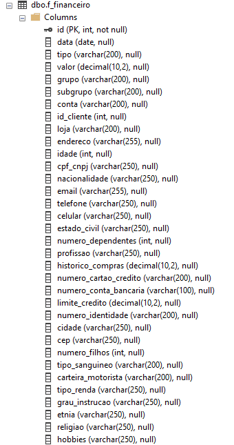
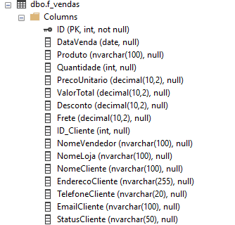
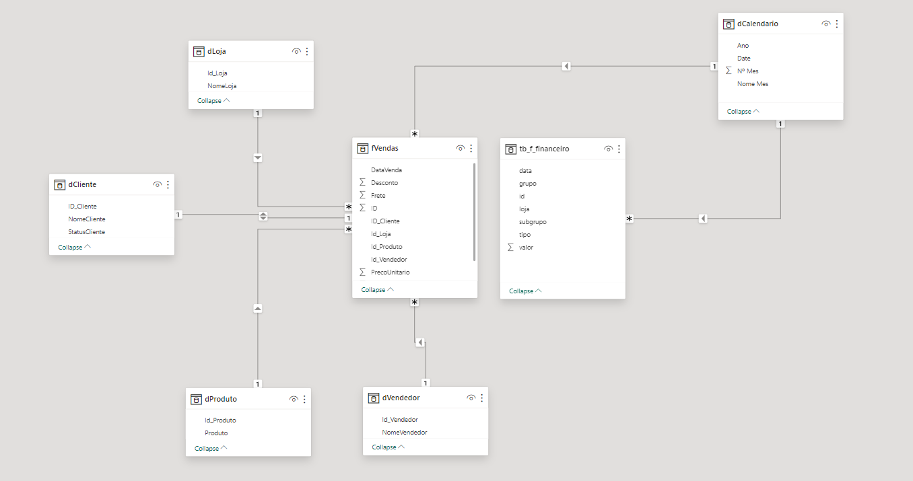
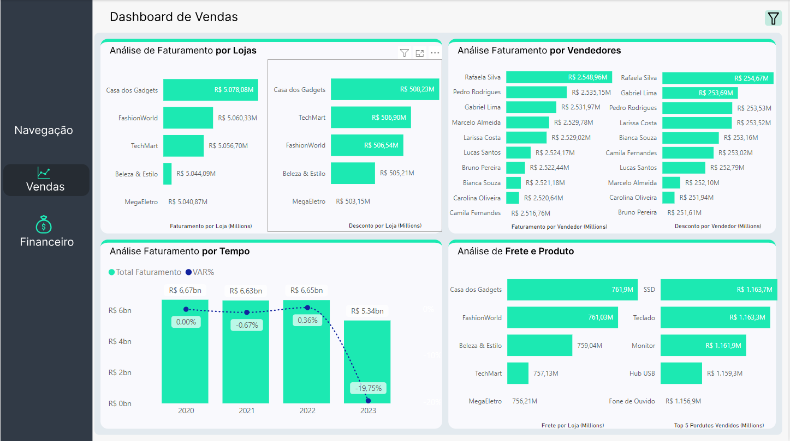
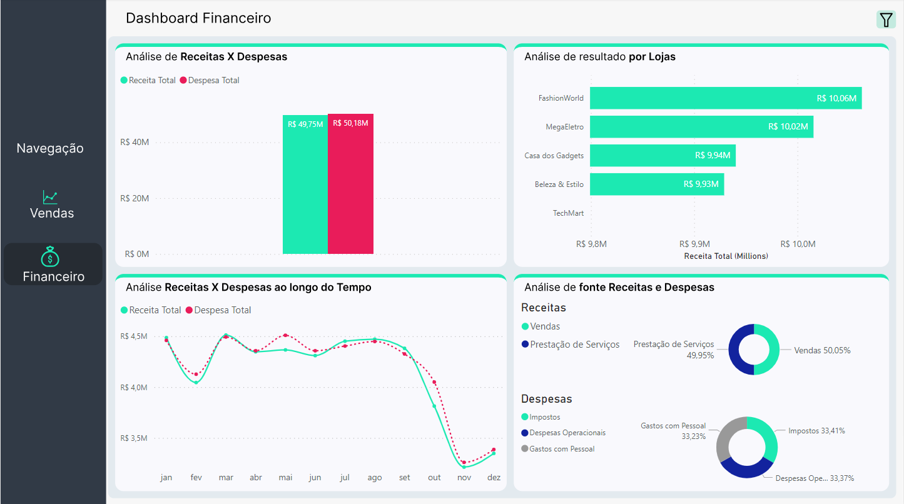

Sales and Financial Analysis of Retail Chain
Context
This case was an analysis of retail store sales based on a sales fact database and a financial table. The case originated from a real company, but the data was altered for data governance reasons.
Step 1: Understanding the data source
In this case, the data originated from an SQL database. Below, we can see the two fact tables involved in the analysis.

Table f_financeiro
Columns
ID: The entry id.DataVenda: The date of sale.
tipo: Entry type. "Receita" means Income and "Despesa" means "Expense" .
valor: Value transaction
grupo: Classification of the entry.
subgrupo: Subgroup of the entry.
conta: Account classified in the chart of accounts.
id_cliente: Customer id.
loja: Store name.
endereco: Customer Address.
idade: Customer Age.
cpf_cnpj: The customer document id.
nacionalidade: Customer Nationality.
email: Customer email.
telefone: Customer phone number.
celular: Customer mobile phone number.
estado_civil: Marital status.
numero_dependentes: Number of dependents.
profissao: Occupation.
historico_compras: Purchase History.
numero_cartao_credito: Credit Card Number.
numero_conta_bancaria: Bank Account Number.
limite_credito: Credit Limit.
numero_identidade: Identity Number.
cidade: Customer City.
cep: Postal Code.
numero_filhos: Number of Children.
tipo_sanguineo: Blood Type.
carteira_motorista: Driver's license number.
tipo_renda: Type of income.
grau_instrucao: Educational Level.
etnia: Ethnicity.
religiao: Customer Religion.
hobbies: Customer hobbies.
Table f_vendas
Columns
ID: The sale id.DataVenda: The sale date.
Produto: The product name.
Quantidade:Quantity sold.
PrecoUnitario: Unit price.
ValorTotal: Total Amount.
Desconto: Discount.
Frete: Freight Amount.
ID_Cliente: The customer id.
NomeVendedor: The seller id.
NomeLoja: The store name.
NomeCliente: The customer name.
EnderecoCliente: The address id.
TelefoneCliente: The customer phone number.
EmailCliente: The customer email.
StatusCliente: The customer status. Can be "VIP" or "Common".
Step 2: Business Problem
The customer wants to know, in the simplest way possible without complexity, the following points:
Sales:
- Which stores generate the highest revenue?
- Which stores offer the most discounts?
- Which salespeople generate the highest revenue?
- Which salespeople offer the most discounts?
- Total revenue over time?
- How is my revenue compared to the previous year?
- Is my revenue increasing or decreasing?
- How is the shipping fee collection?
- Which products sell the most?
Financial:
- How is my Revenue vs. Expenses?
- What is the performance of the stores?
- Are we increasing or decreasing revenues and expenses?
- I want to better understand the sources of revenue and expenses.
Step 3: Answering the business questions.
To answer the business questions, I performed the analysis in SQL by modeling the fact and dimension tables. Below, I provide the code.
Sql Queries f_vendas:
Sql Queries f_financeiro:
Step 4: Data Modeling
The modeling for this dashboard was quite simple; I just broke down the fact table into dimensions, thus forming a star schema modeling.
Step 5: Data Visualization
In the final stage, the type of visualization was combined with the end client who wanted a simple and intuitive project
Pane 1
Pane 2
DAX Measures